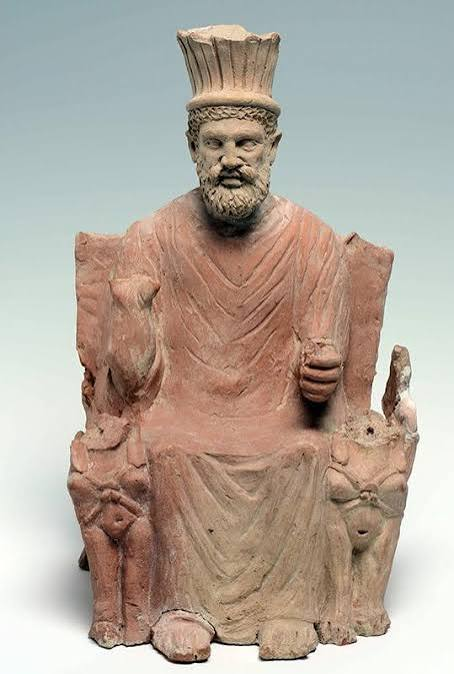
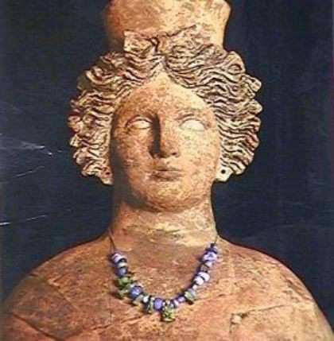
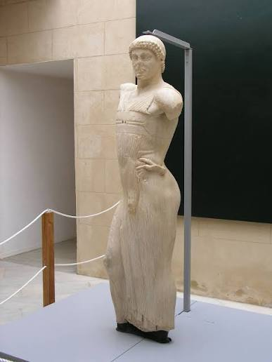
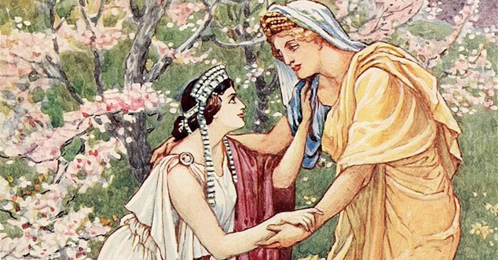
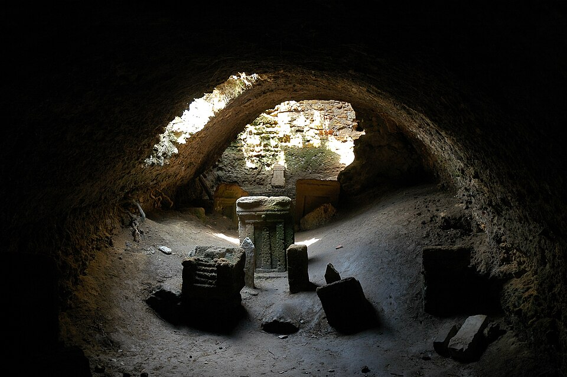
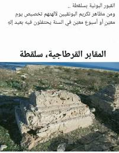

قرطاج: المؤسسات السياسية والديانة
مقدمة
ورث القرطاجيون معتقداتهم الدينية عن الفينيقيين، وتميزت ديانتهم بتعدد الآلهة وبالانفتاح على آلهة الشعوب الأخرى في المتوسط، وهو ما جعلها من أكثر الديانات القديمة ثراء وتنوعاً.
ما هي خصائص الديانة القرطاجية؟
II الديانة القرطاجية
1. تعدد الآلهة
أ. الآلهة الفينيقية
- بعل حمون: كبير الآلهة وحاميها، وهو على شكل آدمي يستوي على عرشه ويرفع يده اليمنى ويمسك صولجاناً بيده اليسرى رمزاً للسلطة والهيمنة. وكان يُعتبر الإله الأكبر في البانثيون القرطاجي، وتُقدَّم له النذور والقرابين في المناسبات العامة والخاصة، ويُستشفع به في الحرب والخصب والحماية. وقد ظل رمزاً للهوية الدينية القرطاجية حتى بعد سقوط المدينة.
- تانيت: تم تجسيدها على شكل امرأة جالسة على كرسي وفي حضنها طفل صغير، لذلك اعتبرت رمز الخصوبة والازدهار. وكانت تُلقَّب بـ«وجه بعل» أي ظهور الإله الأكبر، مما يدل على مكانتها الرفيعة في المعتقد القرطاجي. وقد جمعت بين وظيفة الأم الحامية وإلهة القمر والخصب، وهي بذلك تشبه في بعض وظائفها الإلهة إيزيس في مصر وعشتار في بلاد الرافدين.
- ملقرط: وهو إله مدينة صور ويمثل حامي البحار والمستوطنات، وكان القرطاجيون يقدمون له القرابين. ويُعد ملقرط إلهاً مرتبطاً بالتجارة والملاحة والحرب، وقد انتقلت عبادته مع الفينيقيين إلى كل مستوطناتهم في المتوسط. ويُشبه في وظائفه الإله الإغريقي هرقل، وقد ساهم في ربط المستوطنات القرطاجية بروابط دينية مشتركة.
ب. الآلهة الإغريقية
- ديمترا: إلهة الزراعة.
- برسفونا: ابنة ديمترا وهي إلهة مرتبطة بالأرض.
وقد انتشرت عبادة ديمترا وبرسفونا في قرطاج خاصة في الفترة الهلنستية، حيث أقيم لهما معبد في المدينة. وهذا يدل على أن القرطاجيين لم يرفضوا آلهة الشعوب الأخرى، بل أدمجوها في معتقداتهم.
انفتح القرطاجيون على بقية الديانات في المتوسط من خلال تعدد الآلهة، وهذه سمة تميزهم عن شعوب كثيرة في ذلك العصر، إذ لم يعرف الفرس ولا المصريون هذا الانفتاح الديني بهذه الصورة، كما أن اليونانيين رغم تعدد آلهتهم كانوا يرفضون آلهة الشعوب الأخرى في كثير من الأحيان. وقد ساهم هذا الانفتاح في تقوية الروابط التجارية والثقافية بين قرطاج وشعوب المتوسط.
2. الاهتمام بالمعابد
اهتم القرطاجيون ببناء المعابد مثل معبد الطوفات، وهو معبد بوني غير مشيد يقدم فيه القرطاجيون الأضاحي للإله بعل حمون والإلهة تانيت. وتقدم القرابين الحيوانية أو البشرية ويتم حرقها ووضع رمادها في جرار تثبت في أرضية الطوفات ومعها نصب يذكر فيه اسم صاحبها. وقد وُجدت الطوفات في قرطاج وفي مستوطنات أخرى مثل سوسة وموتية، مما يدل على وحدة العقيدة الدينية في المجال القرطاجي. ويُعد الطوفات من أهم المعالم الدينية في العالم القديم، وهو يشبه في وظيفته المقابر الجماعية والمعابد في آن واحد، وقد اهتم القرطاجيون بتزيينه بالنقوش والنذور. ويُلاحظ أن بناء المعابد لم يكن مقتصراً على النخبة، بل كان يشمل مختلف طبقات المجتمع، مما يعكس مكانة الدين في الحياة العامة والخاصة.
3. الاعتقاد في الحياة ما بعد الموت
حرص القرطاجيون على الاعتناء بموتاهم إيماناً منهم بالحياة بعد الموت، وذلك بوضع التمائم والأقنعة لتطرد عنهم الأرواح الشريرة. كما كانوا يضعون في القبور الأواني والأطعمة والحلي، اعتقاداً بأن الميت يحتاج إليها في حياته الأخرى. وقد مارسوا أيضاً طقوس البكاء والندب وزيارة القبور في مواسم معينة.
تتشابه قرطاج مع المعتقدات المصرية من حيث الاعتقاد بحياة ما بعد الموت، لكنها اختلفت عنها في عدم تحنيط الموتى، واكتفت بحرق الجسد أو دفنه مع الأثاث الجنائزي. وهذا يعني أن القرطاجيين تأثروا بالمصريين في الفكرة، لكنهم طبقوها بطريقتهم الخاصة، مما يدل على أصالة معتقداتهم وانفتاحهم في آن واحد.
وتصنف القبور حسب المستوى الاجتماعي إلى صنفين:
أ. قبور الفقراء
على شكل خنادق محفورة توارى فيه جرار تحتوي رفاة الموتى. وكانت هذه القبور جماعية في الغالب، وتخلو من الزخارف والنقوش، مما يدل على أن الحياة الآخرة كانت في نظر القرطاجيين متاحة لكل الطبقات، وإن اختلفت شكل المقبرة ومحتواها حسب المكانة الاجتماعية.
ب. قبور الأغنياء
منحوتة في الصخر وتضم عناصر:
- مدرج
- معبر يؤدي إلى حجرة جنائزية
وكانت هذه القبور مزينة بالنقوش والتماثيل، وتحتوي على أواني فخارية وزجاجية وحلي ذهبية وعاجية وأقنعة. وهذا يدل على أن الأثرياء كانوا يحرصون على تأمين حياة أفضل بعد الموت، وأن التفاوت الاجتماعي امتد إلى ما بعد الموت أيضاً.
خاتمة
يتميز القرطاجيون بتطور المؤسسات السياسية وبتعدد الآلهة مما يعكس التطور السياسي والانفتاح الحضاري لقرطاج في المتوسط. وقد جمعت الديانة القرطاجية بين الأصالة الفينيقية والانفتاح على آلهة الشعوب الأخرى، كما جمعت بين الاعتقاد بحياة ما بعد الموت ومظاهر التمييز الاجتماعي في القبور، وهذه سمات جعلت قرطاج من أكثر الحضارات القديمة ثراء وتنوعاً في المجالين السياسي والديني.
📖 تعريفات
🏛️ آلهة
- بعل حمون: كبير الآلهة وحاميها، وهو على شكل آدمي يستوي على عرشه ويرفع يده اليمنى ويمسك صولجاناً بيده اليسرى رمزاً للسلطة والهيمنة. يُعتبر الإله الأكبر في البانثيون القرطاجي، وتُقدَّم له النذور والقرابين، ويُستشفع به في الحرب والخصب والحماية، وظل رمزاً للهوية الدينية القرطاجية حتى بعد سقوط المدينة.
- تانيت: جُسّدت على شكل امرأة جالسة على كرسي وفي حضنها طفل صغير، لذلك اعتبرت رمز الخصوبة والازدهار. تُلقَّب بـ«وجه بعل» أي ظهور الإله الأكبر، وجمعت بين وظيفة الأم الحامية وإلهة القمر والخصب، وتشبه في بعض وظائفها الإلهة إيزيس في مصر وعشتار في بلاد الرافدين.
- ملقرط: إله مدينة صور ويمثل حامي البحار والمستوطنات. يرتبط بالتجارة والملاحة والحرب، وانتقلت عبادته مع الفينيقيين إلى كل مستوطناتهم في المتوسط، ويُشبه في وظائفه الإله الإغريقي هرقل، وقد ساهم في ربط المستوطنات القرطاجية بروابط دينية مشتركة.
- ديمترا: إلهة إغريقية للزراعة، انتشرت عبادتها في قرطاج خاصة في الفترة الهلنستية حيث أُقيم لها معبد في المدينة.
- برسفونا: ابنة ديمترا، إلهة إغريقية مرتبطة بالأرض، انتشرت عبادتها في قرطاج في الفترة الهلنستية إلى جانب ديمترا.
🌍 دول ومناطق
- قرطاج: مركز العقيدة الدينية القرطاجية، وفيها أُقيم معبد الطوفات ومعبد ديمترا وبرسفونا في الفترة الهلنستية.
- صور: مدينة فينيقية، وهي المدينة التي ينتمي إليها الإله ملقرط الذي كان حامياً للبحار والمستوطنات.
- سوسة: إحدى المستوطنات التي وُجدت فيها الطوفات إلى جانب قرطاج وموتية.
- موتية: إحدى المستوطنات التي وُجدت فيها الطوفات إلى جانب قرطاج وسوسة.
- مصر: حضارة قديمة تشابهت مع قرطاج في الاعتقاد بحياة ما بعد الموت، لكنها اختلفت عنها في تحنيط الموتى، كما لم تعرف الانفتاح الديني الذي عرفته قرطاج.
- بلاد الرافدين: حضارة قديمة، تُشبه فيها الإلهة عشتار الإلهة القرطاجية تانيت في بعض الوظائف.
📌 أخرى
- الطوفات: معبد بوني غير مشيد يقدم فيه القرطاجيون الأضاحي للإله بعل حمون والإلهة تانيت. تُقدَّم فيه القرابين الحيوانية أو البشرية وتُحرق ويوضع رمادها في جرار تُثبَّت في أرضية الطوفات ومعها نصب يذكر فيه اسم صاحبها. وُجدت في قرطاج وسوسة وموتية، ويُعد من أهم المعالم الدينية في العالم القديم، ويشبه في وظيفته المقابر الجماعية والمعابد في آن واحد.
- البانثيون القرطاجي: مجموعة الآلهة القرطاجية، ويُعد الإله بعل حمون أكبر آلهتها.
- الفترة الهلنستية: المرحلة التي انتشرت فيها عبادة الإلهتين الإغريقيتين ديمترا وبرسفونا في قرطاج، حيث أُقيم لهما معبد في المدينة.
🗺️ خرائط ومعطيات مصورة





